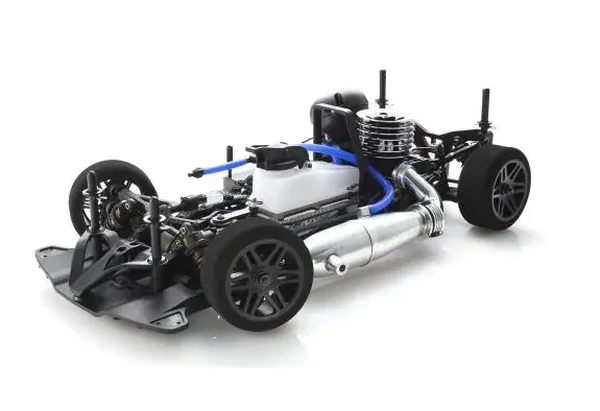

京商 V-One R4 Evo.2

引用元画像：京商公式サイト
📋 基本情報
| メーカー | 京商（Kyosho） |
|---|---|
| 機種名 | V-One R4 Evo.2 |
| シャーシ略称 | V-One R4 Evo.2 |
| 型番 | 33211 |
| 発売時期 | 2018年 |
| 価格 | 詳細不明（入荷は不明） |
| 生産状況 | 現行販売中（入荷は不明） |
| カテゴリー | ラジコンカー（1/10スケール GP 4WD） |
| サブカテゴリー | 12-15エンジン ツーリングカー（ピュアテンGP 4WD） |
| シリーズ | V-ONE R4シリーズ Evo.2 |
📏 シャーシスペック
| 全長 | 368mm |
|---|---|
| 全幅 | 200mm |
| 全高 | 105mm |
| ホイールベース | 258mm |
| トレッド | フロント174mm / リヤ170mm |
| タイヤ | 別売 |
| フレーム | 新形状ダブルデッキアルミプレートシャーシ（ベルトドライブ4WD） |
| 全備重量 | 約1,700g（エンジン別売） |
⚙️ 駆動系
| 駆動方式 | ベルトドライブ4WD |
|---|---|
| デフギヤ | ギヤデフ（前後） |
| ギヤ比 | 7.18:1 / 5.09:1（2スピードトランスミッション） |
| トランスミッション | 2スピードトランスミッション |
| ドライブシャフト | フロント：ユニバーサルジョイント リア：ドッグボーンドライブシャフト |
| ベアリング | フルベアリング仕様 |
| エンジン | 12-15クラス後方排気エンジン（別売） |
🔧 サスペンション
| 形式 | 4輪ダブルウィッシュボーン独立懸架 |
|---|---|
| ダンパー | ショートタイプ コイルスプリング オイルダンパー×4本 |
| スタビライザー | 標準装備 |
💡 特徴
V-One R4 Evo.からさらなる戦闘力アップを実現
- 国内外のビッグレースで好成績を収めてきたV-ONE R4シリーズのマイナーチェンジモデル
- 🏆 2018年度 JMRCA 1/10エンジンツーリングカー全日本選手権スポーツクラス制覇
- 従来モデルの"Evo."をベースに細かな改良を加えたEvo.2へとバージョンアップ
シャーシ剛性の適正化
- メインシャシーとアッパーデッキの形状を一新
- 近年著しく進むエンジンの高出力化とレースの高速化に完全対応
- タイヤのグリップに依存しないメカニカルグリップを高めることで昨今のレースで導入されているコントロールタイヤのレギュレーションにも対応
ショートタイプオイルダンパー採用でいっそうの低重心化
- もともと低重心設計で定評のあるV-ONE R4シリーズだが、ショートタイプのオイルダンパーでさらなる低重心を追求
- コーナリングスピードの向上
- ハイグリップ路面走行時のハイサイド防止に大きく貢献
細部にわたる改良
- ブレーキローターは減速時のフィーリングを向上させた新規品を標準装備
- 駆動効率を高めるとともにクラッシュによるドライブシャフト脱落を防ぐフロントユニバーサルスイングシャフト
- ステアリングポストの見直しで最適なアッカーマン比に近づき、コーナリングスピードが向上
- 既存のオプションパーツのほぼすべてが使用可能
V-One R4 Evo.の素性の良さを残しつつ、各部をリファイン
- 容易な脱着が可能なフックピン固定式の燃料タンク
- オプションのカーボンディスクの装着が可能なフロントナックル＆リアハブを装備
- 高度に先鋭化するレースシーンに完全対応する細部のブラッシュアップで高い戦闘力を発揮
🔧 ぽすとそに工房での修理実績
修理難易度
★★★☆☆（普通）
パーツ供給が不安定ですが、V-One R4シリーズとの互換性が高く、修理は比較的容易です。
よくある故障・注意点
- ショートタイプオイルダンパーのオイル漏れ（Oリング劣化）
- フロントユニバーサルジョイントドライブシャフトの磨耗
- ドライブベルトの磨耗・破損（定期的な点検が必要）
- ギヤデフのギヤ磨耗（ハイパワーエンジン使用時）
- 新型ブレーキローターの調整不良
修理のポイント
- ショートタイプオイルダンパーは定期的にオイル交換とOリング交換を実施
- フロントユニバーサルジョイントは定期的にグリスアップを実施
- ドライブベルトの張り具合を定期的にチェック（中央部で5mm程度の押し込み）
- ギヤデフは定期的にシリコンオイルの交換を実施
- ブレーキローターの減速フィーリングを確認し、必要に応じて調整
- V-One R4 Evo.のオプションパーツがほぼすべて使用可能
その他の特徴
- 2018年発売のため、現在はパーツ供給が不安定（入荷は不明）
- V-One R4シリーズとの部品互換性が非常に高い
- 2018年JMRCA全日本選手権スポーツクラス制覇の実績
- レース用途に最適な設計